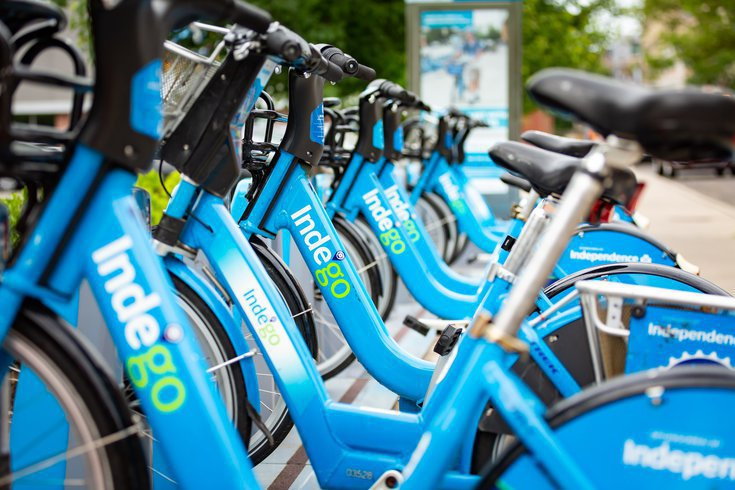

Indego is
the public bike sharing system that operates in Philadelphia. After several years of planning,
Indego commenced operations with its first 60 stations and 600 bicycles in 2015.
Currently, there are over 250 stations and more than 2,200 bicycles in
operation. Over the past decade, more than 500,000 users adopted Indego as an
easy, economical, and active way to travel in the city. Indego ridership has
consistently risen annually since 2020, with total annual rides in 2023
surpassing one million for the first time in the program's history. This
achievement was surpassed in 2024 with a record 1.3 million rides (Anon, 2025).
The
Philadelphia's bikeshare program claimed to be the first in the country to emphasise
equity and specifically cater to disadvantaged people, including lower-income and
minority individuals (Auchincloss et al., 2020).
Introduction
